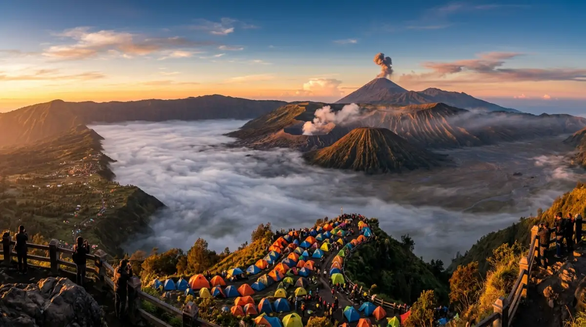
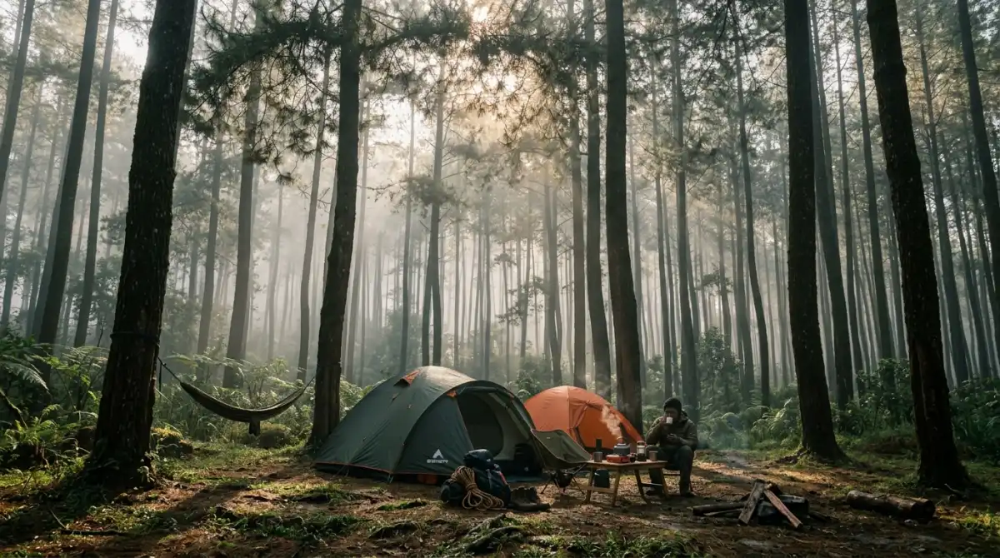

Panorama sunrise di kawasan Bromo — salah satu lokasi camping paling ikonik di Jawa Timur.Jawa Timur memiliki lebih dari 20 lokasi camping populer mulai dari tepi danau vulkanik Ranu Kumbolo hingga padang savana Bromo, cocok untuk pemula maupun pendaki berpengalaman.
- Mengapa Jawa Timur Jadi Tujuan Camping Favorit?
- 15 Tempat Camping Terbaik di Jawa Timur
- Berapa Biaya Camping di Jawa Timur?
- Apa Perlengkapan Wajib untuk Camping di Jawa Timur?
- Kapan Waktu Terbaik Camping di Jawa Timur?
- Tips Camping Aman dan Bertanggung Jawab di Jawa Timur
- Apakah Camping di Jawa Timur Cocok untuk Pemula?
- FAQ
Mengapa Jawa Timur Jadi Tujuan Camping Favorit?
Jawa Timur adalah salah satu provinsi dengan keragaman lanskap alam terlengkap di Indonesia, menjadikannya destinasi camping yang sangat diminati sepanjang tahun.
Provinsi ini memiliki setidaknya 7 gunung berapi aktif dan beberapa danau vulkanik yang memukau. Menurut data Dinas Pariwisata Jawa Timur tahun 2024, kawasan Taman Nasional Bromo Tengger Semeru (TNBTS) menerima lebih dari 500.000 kunjungan wisatawan per tahun, dengan sekitar 30 persen di antaranya melakukan aktivitas berkemah. Angka ini menjadikan TNBTS sebagai kawasan camping paling aktif di Pulau Jawa.
Selain gunung, Jawa Timur juga menawarkan pilihan camping di kawasan hutan pinus, tepi sungai, dan pantai selatan yang masih alami. Keberagaman ini membuat wisatawan dari berbagai tingkat pengalaman dapat menemukan lokasi yang sesuai.
15 Tempat Camping Terbaik di Jawa Timur
Lima belas lokasi berkemah berikut dipilih berdasarkan keindahan alam, aksesibilitas, fasilitas, dan tingkat keamanan yang tersedia untuk pengunjung.
1. Ranu Kumbolo, Lumajang
Ranu Kumbolo adalah danau vulkanik di ketinggian 2.400 meter di atas permukaan laut yang menjadi lokasi camping paling ikonik di Jawa Timur. Area ini berada di jalur pendakian Gunung Semeru dan hanya dapat diakses melalui jalur Ranu Pane.
Pengunjung wajib memiliki Simaksi (Surat Izin Masuk Kawasan Konservasi) yang diajukan melalui situs resmi TNBTS. Kuota kunjungan dibatasi untuk menjaga ekosistem danau. Berkemah di tepi Ranu Kumbolo memberikan pemandangan langit berbintang dan kabut pagi yang tidak tertandingi di kawasan lain.
2. Savana Bromo, Probolinggo/Pasuruan
Area savana di kawasan Gunung Bromo menawarkan pengalaman berkemah di hamparan padang rumput terbuka dengan latar Gunung Batok dan Semeru. Kawasan ini berada dalam pengelolaan TNBTS dan memerlukan tiket masuk resmi.
Sunrise dari area camping ini termasuk yang paling banyak difoto oleh wisatawan mancanegara. Akses relatif mudah dijangkau dari Kota Probolinggo atau Pasuruan menggunakan kendaraan yang disewa.
3. Gunung Arjuno, Pasuruan/Mojokerto
Gunung Arjuno dengan ketinggian 3.339 meter di atas permukaan laut menyediakan beberapa titik camping di jalur pendakian. Camp site populer berada di Pos Kokap dan Pos Tampuono.
Jalur ini cocok untuk camper yang menginginkan suasana hutan tropis lebat dengan pemandangan Kota Surabaya di kejauhan pada malam yang cerah. Pendakian ke puncak membutuhkan waktu sekitar 8–10 jam dari basecamp Tretes.
4. Gunung Penanggungan, Mojokerto
Gunung Penanggungan dikenal sebagai “Gunung Suci” karena banyaknya situs purbakala di lerengnya. Dengan ketinggian 1.653 meter di atas permukaan laut, gunung ini lebih ramah untuk camper pemula dibanding gunung-gunung yang lebih tinggi.
Pendakian dari jalur Jolotundo atau Tamiajeng menawarkan panorama kota dan laut Jawa saat cuaca cerah. Durasi pendakian ke puncak berkisar 4–6 jam dari basecamp.
5. Hutan Pinus Nongko Ijo, Madiun
Hutan Pinus Nongko Ijo di Kabupaten Madiun menyediakan area camping yang tertata dengan pohon pinus berusia puluhan tahun. Lokasi ini sangat cocok untuk keluarga dan rombongan yang ingin berkemah tanpa harus mendaki.
Fasilitas yang tersedia meliputi area parkir luas, toilet umum, dan warung makan di sekitar kawasan. Tiket masuk relatif terjangkau dengan harga sekitar Rp10.000–Rp15.000 per orang.

Suasana camping di kawasan hutan pinus — pilihan ideal untuk keluarga dan camper pemula yang ingin menikmati alam tanpa pendakian berat.6. Pantai Watu Ulo, Jember
Pantai Watu Ulo menawarkan pengalaman camping tepi pantai dengan panorama Samudra Hindia yang luas. Area camping tersedia di zona yang telah ditentukan pengelola dengan fasilitas dasar yang memadai.
Berkemah di pantai ini memberikan pengalaman berbeda dibanding camping di gunung, dengan suara ombak sebagai pengantar tidur dan sunrise langsung dari arah laut.
7. Ranu Regulo, Lumajang
Ranu Regulo adalah danau yang lebih kecil dari Ranu Kumbolo namun menawarkan suasana yang lebih tenang dan akses yang lebih mudah. Danau ini berada di dekat basecamp Ranu Pane dan sering dijadikan titik aklimatisasi sebelum pendakian ke Ranu Kumbolo.
8. Coban Rais, Malang
Kawasan Coban Rais di lereng Gunung Panderman, Batu, Malang, menyediakan area camping di tengah hutan dengan aliran sungai dan air terjun sebagai daya tarik utama. Lokasi ini mudah dijangkau dari Kota Batu dalam waktu sekitar 30 menit berkendara.
9. Gunung Welirang, Mojokerto/Pasuruan
Gunung Welirang yang berhubungan langsung dengan Gunung Arjuno menawarkan jalur camping unik melewati kawah belerang aktif. Pengalaman melihat penambang belerang bekerja di kawah menjadi atraksi tersendiri bagi pendaki.
10. Pantai Pulau Merah, Banyuwangi
Pantai Pulau Merah di Banyuwangi merupakan lokasi camping pantai yang populer dengan pasir merah kecokelatan dan ombak yang cocok untuk selancar. Beberapa penyedia jasa camping lokal menawarkan paket berkemah lengkap di area ini.
11. Kawah Ijen, Banyuwangi
Kawasan Kawah Ijen memiliki zona camping resmi di sekitar basecamp Paltuding. Berkemah di sini memungkinkan wisatawan menyaksikan fenomena blue fire pada dini hari tanpa harus terburu-buru dari penginapan di kaki gunung.
12. Gunung Raung, Banyuwangi/Bondowoso
Gunung Raung adalah salah satu pendakian paling menantang di Jawa Timur dengan kaldera terbesar. Camping di jalur pendakiannya ditujukan untuk pendaki berpengalaman dengan perlengkapan lengkap.
13. Telaga Sarangan, Magetan
Telaga Sarangan di Magetan menyediakan area camping di tepi danau dengan latar Gunung Lawu. Lokasi ini sangat terjangkau dan ramai saat akhir pekan. Fasilitas lengkap tersedia karena kawasan ini sudah berkembang sebagai destinasi wisata keluarga.
14. Pantai Tiga Warna, Malang
Pantai Tiga Warna di Kabupaten Malang Selatan merupakan pantai yang dilindungi dan hanya dapat diakses melalui izin resmi pengelola. Berkemah di sini memberikan pengalaman pantai yang sangat alami dengan terumbu karang yang terjaga.
15. Gunung Lawu via Cemoro Sewu, Magetan
Meski puncaknya berada di perbatasan Jawa Tengah–Jawa Timur, jalur pendakian Cemoro Sewu dari sisi Magetan adalah pilihan populer untuk camping dengan pemandangan matahari terbenam yang spektakuler dari Puncak Hargo Dumilah.
Berapa Biaya Camping di Jawa Timur?
Biaya camping di Jawa Timur bervariasi tergantung kawasan, dengan kisaran antara Rp15.000 hingga Rp150.000 per orang untuk tiket masuk, belum termasuk biaya porter, pemandu, dan perlengkapan.
Rincian biaya yang umum berlaku di berbagai lokasi:
- Kawasan TNBTS (Bromo, Semeru, Ranu Kumbolo): Simaksi Rp50.000–Rp150.000 per orang per hari tergantung jenis kunjungan. Biaya ini terpisah dari tiket masuk kawasan.
- Kawah Ijen: Tiket masuk Rp5.000 (wisnus) dan Rp100.000 (wisman). Camping di basecamp Paltuding dikenakan biaya tambahan yang ditetapkan pengelola.
- Hutan pinus dan kawasan wisata umum: Rp10.000–Rp30.000 per orang untuk tiket masuk.
- Camping pantai: Bervariasi, umumnya Rp15.000–Rp50.000 per orang.
Biaya porter di jalur Semeru berkisar Rp300.000–Rp500.000 per hari untuk membawa beban hingga 15 kilogram. Sewa perlengkapan camping seperti tenda, sleeping bag, dan matras tersedia di basecamp dengan harga Rp50.000–Rp150.000 per item per hari.
Apa Perlengkapan Wajib untuk Camping di Jawa Timur?
Perlengkapan berkemah yang tepat menentukan kenyamanan dan keselamatan selama di alam terbuka, terutama di kawasan berketinggian tinggi Jawa Timur.
Daftar perlengkapan dasar yang wajib dibawa:
- Tenda yang sesuai kapasitas dan tahan angin
- Sleeping bag dengan rating suhu minimal 5 derajat Celcius untuk camping di gunung
- Matras atau sleeping pad
- Headlamp dengan baterai cadangan
- Pakaian hangat dan jas hujan
- Sepatu trekking yang sudah dipakai dan tidak baru
- Perlengkapan P3K dasar
- Kompor portable dan bahan bakar
- Air minum minimal 2 liter per hari per orang
- Makanan siap saji yang cukup untuk seluruh durasi
Untuk camping di kawasan gunung di atas 2.000 meter di atas permukaan laut seperti Semeru dan Arjuno, suhu malam bisa turun hingga 5 derajat Celcius bahkan di bawah nol pada musim kemarau puncak. Persiapan perlengkapan yang tepat bukan pilihan, melainkan keharusan.
Kapan Waktu Terbaik Camping di Jawa Timur?
Musim kemarau antara April hingga Oktober adalah waktu paling ideal untuk berkemah di Jawa Timur, dengan kondisi cuaca yang lebih stabil dan risiko hujan lebat yang lebih rendah.
Pertimbangan waktu berdasarkan lokasi:
- Gunung dan kawasan pegunungan: Hindari Desember–Februari yang merupakan puncak musim hujan. Jalur sering ditutup karena longsor dan kabut tebal.
- Pantai selatan: Ombak besar pada Juni–Agustus bisa berbahaya. Camping pantai paling aman pada April–Mei dan September–Oktober.
- Kawah Ijen: Blue fire paling terlihat pada musim kemarau karena langit lebih cerah dan asap belerang tidak terlalu tebal.
Tips Camping Aman dan Bertanggung Jawab di Jawa Timur
Camping yang bertanggung jawab melindungi alam dan memastikan keselamatan diri sendiri serta rombongan.
Prinsip utama yang perlu diperhatikan:
- Selalu daftarkan diri dan rombongan kepada pengelola sebelum masuk kawasan
- Bawa kembali semua sampah, termasuk sisa makanan organik
- Gunakan jalur resmi dan jangan membuka jalur baru
- Jangan menyalakan api unggun sembarangan di kawasan taman nasional
- Hormati batas kuota kunjungan yang ditetapkan pengelola
- Informasikan rencana perjalanan kepada orang yang dapat dihubungi
- Bawa perlengkapan pertolongan pertama dan ketahui cara menggunakannya
Apakah Camping di Jawa Timur Cocok untuk Pemula?
Beberapa lokasi camping di Jawa Timur sangat cocok untuk pemula, terutama yang tidak memerlukan pendakian panjang dan memiliki fasilitas dasar yang memadai.
Rekomendasi lokasi untuk pemula:
- Hutan Pinus Nongko Ijo, Madiun: Tidak perlu mendaki, fasilitas lengkap
- Telaga Sarangan, Magetan: Akses mudah, kawasan aman dan ramai
- Coban Rais, Batu Malang: Dekat dengan kota, jalur tidak terlalu berat
- Gunung Penanggungan: Pendakian lebih pendek dibanding gunung lain di Jawa Timur
Pemula disarankan tidak langsung mencoba jalur berat seperti Semeru atau Raung. Bangun pengalaman bertahap mulai dari camping di lokasi rendah sebelum beralih ke gunung-gunung yang lebih tinggi dan menantang.
Jawa Timur adalah provinsi dengan pilihan camping paling beragam di Pulau Jawa, mulai dari danau vulkanik Ranu Kumbolo, savana Bromo, hutan pinus Madiun, hingga pantai-pantai selatan yang alami. Pilih lokasi sesuai pengalaman dan kondisi fisik. Urus izin lebih awal untuk kawasan TNBTS. Selalu prioritaskan keselamatan dengan membawa perlengkapan yang tepat dan mendaftarkan rencana perjalanan.
FAQ — Tempat Camping di Jawa Timur